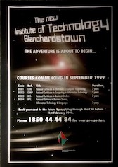
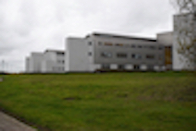

front3.jpg
❮
❯
Buisness of ITB
Maraide Murphy who has worked on ITB’s marketing team since day one has mentioned about her idea of history in ITB through her own eyes.
The college was set up in 1999 where the first ever students took a huge risk coming here. The cement on the one block- “A” block - wasn’t even dry that September they joined.
Moving forward to 2000. The first ad campaigns occurred. They were only broadcast on radio as it wasn’t till 2006 when digitalisation hit ITB.
Their first logo design was horrendous! It was not unaversal in green and red. Not the best branding stratagy! People who have any type of eye sight issues or learning disabilities could simply, not read the logo.

In 2003, Itb built the link building. They invested €75 million for this as now, it was settled .
TUDublin was on its way of being set up since 2012.
Now in 2018 a new branding company called red dog now brand , help with ads and proper logos form.
June 2018. The month ITB, ITT and DIT became the first single body technological university- TUDublin to join forces as the one unit.
Thus forming the past, present and future of itb in the eyes of buisness.
